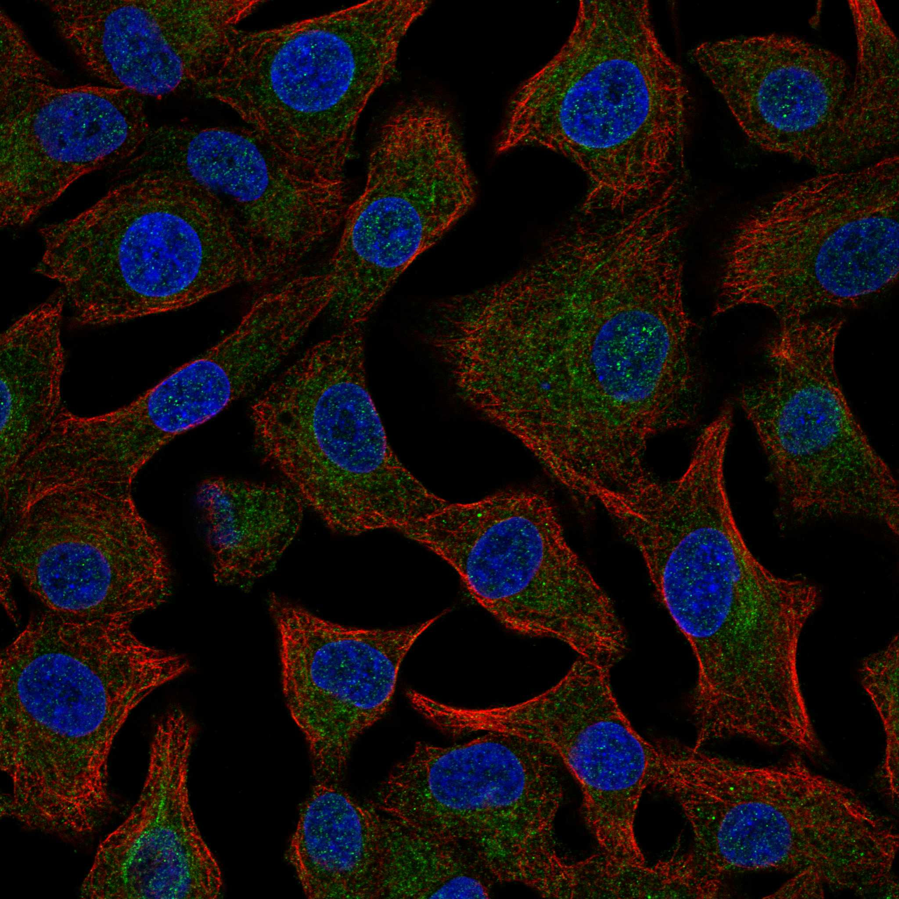

type: protein-evaluation gene: "ANKRD16" date: 2026-06-01 tags: [protein-scout, nucleus-cytoplasm, evaluation] status: scored ---
ANKRD16 核蛋白评估报告
1. 基本信息
| 项目 | 内容 |
|---|---|
| 基因名 | ANKRD16 |
| 蛋白全名 | Ankyrin repeat domain-containing protein 16 |
| 蛋白大小 | 361 aa / 39.3 kDa |
| UniProt ID | Q6P6B7 |
2. 评分总览
| 维度 | 得分 | 权重 | 加权后 | 关键证据摘要 |
|---|---|---|---|---|
| 核定位特异性 | 4/10 | ×4 | 16.0 | UniProt: Cytoplasm + Nucleus (ECO:0000250); GO: cytoplasm ISS + nucleus ISS — 仅序列相似性推断 |
| 蛋白大小 | 7/10 | ×1 | 7.0 | 361 aa |
| 研究新颖性 | 10/10 | ×5 | 50.0 | PubMed strict=3, broad=5 |
| 三维结构 | 8/10 | ×3 | 24.0 | AlphaFold pLDDT 93.9; PDB 无 |
| 调控结构域 | 4/10 | ×2 | 8.0 | Ankyrin repeat domain; 功能为 tRNA 翻译保真度 |
| PPI 网络 | 4/10 | ×3 | 12.0 | STRING 弱: FBH1, RPP14, NFKBIA; IntAct 6 条 |
| 加权总分 | 117/180** | |||
| 互证加分 | +0.0 | |||
| 归一化总分 (÷1.83) | 63.9/100** |
3. 详细分析
3.1 核定位证据
| 来源 | 定位 | 可信度 |
|---|---|---|
| UniProt | Cytoplasm (ECO:0000250); Nucleus (ECO:0000250) | 序列相似性推断 |
| GO-CC | cytoplasm (ISS:UniProtKB); nucleus (ISS:UniProtKB) | 序列相似性推断 |
| HPA | Reliability (IF): Approved; Subcellular location: Endoplasmic reticulum | Experimental (IF) |
HPA 定位: Reliability (IF) = Approved。Subcellular location = Endoplasmic reticulum（单一）。HPA IF 实验显示 ER 定位，与 UniProt/GO 的 cytoplasm + nucleus 注释不一致。注意：UniProt/GO 核定位证据均来自序列相似性推断（ISS/ECO:0000250），属于最低级别的注释证据，HPA Approved 的实验数据显示 ER 而非核定位。核-胞质分类主要基于 UniProt/GO 双源一致的注释，但实际实验支持较弱。

3.2 结构
| 指标 | 数值 |
|---|---|
| AlphaFold | AF-Q6P6B7-F1 |
| 平均 pLDDT | 93.9 |
| pLDDT >90 | 89.8% |
| pLDDT 70-90 | 4.4% |
| pLDDT 50-70 | 3.6% |
| pLDDT <50 | 2.2% |
| PDB | 无 |
| InterPro | IPR002110, IPR036770 |
| Pfam | PF12796, PF13606, PF13637 |
AlphaFold pLDDT 93.9（mean），结构预测置信度极高（89.8% >90）。PAE image URL 存在 (AF-Q6P6B7-F1-predicted_aligned_error_v6.png)，未生成本地副本。
3.3 研究现状
| 指标 | 数值 |
|---|---|
| PubMed strict (Title/Abstract) | 3 |
| PubMed broad | 5 |
文献量极低。关键文献 PMID:29769718 (Nature 2018) 报道 ANKRD16 通过与 AARS/AlaRS 结合防止 tRNA 错配，维持翻译保真度。功能明确但研究量极少。
3.4 PPI 网络
| Partner | Source | Evidence/Method | Score/Experiments | PMID/Note | Relevance |
|---|---|---|---|---|---|
| FBH1 | STRING | experimental+textmining | exp 0.042, score 0.639 | DNA helicase | 弱实验支持 |
| RPP14 | STRING | textmining | score 0.516 | Ribonuclease P subunit | textmining only |
| NFKBIA | STRING | — | score 0.501 (no sub-scores) | NF-kB inhibitor | 无实验/数据库支持 |
| RFXANK | STRING | textmining | score 0.497 | MHC II regulator | textmining only |
| AARS2 | STRING | experimental+textmining | exp 0.096, score 0.443 | mitochondrial AlaRS | 功能关联（同源） |
| AARS1 | STRING | experimental+textmining | exp 0.096, score 0.439 | cytoplasmic AlaRS | 已知功能伙伴 |
| CD19 | IntAct | anti tag coIP | PMID:33961781 | Cell 2021 | 实验验证 |
| RHOA | IntAct | anti tag coIP | PMID:33961781 | Cell 2021 | 实验验证 |
| GAMT | IntAct | anti tag coIP | PMID:33961781 | Cell 2021 | 实验验证 |
| Oxnad1 | IntAct | anti tag coIP | PMID:26496610 | — | 小鼠同源 |
| Spred2 | IntAct | anti tag coIP | PMID:26496610 | — | 小鼠同源 |
UniProt interactions: 无记录。PPI 整体弱，AARS1 为已知功能伙伴（ANKRD16 与 AlaRS 结合防止 tRNA 错配）。
4. 总体评价
ANKRD16 是低置信度核-胞质候选。UniProt + GO 双源一致的核 + 胞质注释均为序列相似性推断（ECO:0000250 / ISS），HPA Approved IF 实验数据显示单一 ER 定位，与核注释不一致。蛋白功能为 tRNA 翻译保真度（Nature 2018），但定位证据薄弱。保留仅因双源一致的注释框架，置信度低。
5. 数据来源
- UniProt: https://www.uniprot.org/uniprotkb/Q6P6B7
- AlphaFold: https://alphafold.ebi.ac.uk/entry/Q6P6B7
- PubMed: https://pubmed.ncbi.nlm.nih.gov/?term=ANKRD16
- HPA: https://www.proteinatlas.org/ENSG00000134461-ANKRD16

HPA IF 图像已本地嵌入。
PAE 图像说明: AlphaFold PAE 图像已重新获取并嵌入（见下方 PAE 图像修正块）；结构判断仍结合 pLDDT 与 PAE 综合判断。
<!-- AF_PAE_REPAIR_START --> PAE 图像修正（2026-06-05）: AlphaFold 提供 predicted aligned error 图像；此前“PAE 图像暂无数据”的表述为未获取/未嵌入导致。